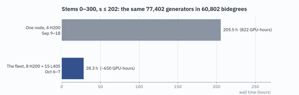
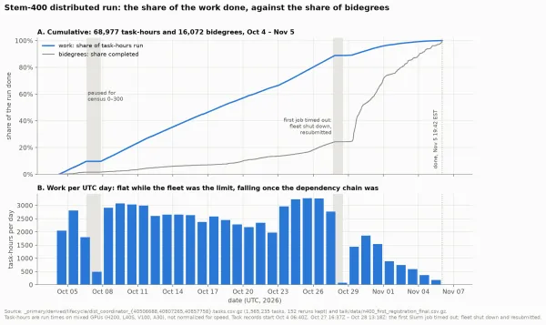
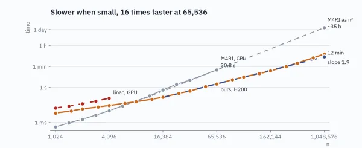
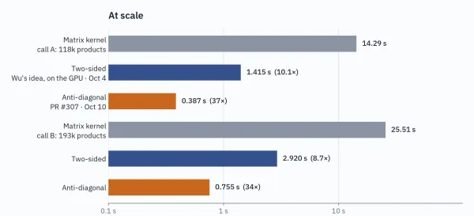
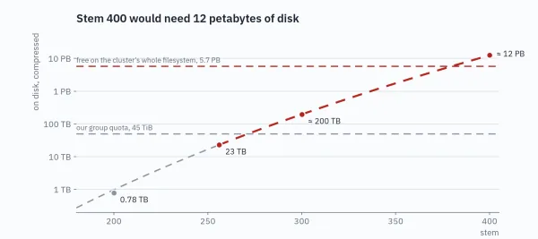

Ext to stem 400
Rust · CUDA · built on sseq · 2026Computing the stable homotopy groups of spheres is arguably the most central problem in stable homotopy theory. The best tool for it, the Adams spectral sequence, starts from a table (its E₂ page) with a long tradition of being pushed further and further. This run pushes it through stem 400, far past the previous best.
In all: 37 days, up to 45 GPUs, ~18 quadrillion Milnor products and ~1.2 sextillion bit operations of row reduction.
- Distributed the core algorithm across up to 45 GPUs of four kinds (H200, L40S, V100, A30) on a shared HPC cluster: one coordinator, stateless workers scheduled through Slurm, row reduction as a service. On a benchmark workload: 205.5 h on one node → 28.3 h on 23 GPUs.
- Found structure in the mathematics that exposes far more parallel work. Inside each step, the dependency graph grows exponentially wide but only polynomially deep. Between steps, the algebra allows a relaxation that halves the critical path. Together they took the run from ~20 GPUs’ worth of parallelism to ~190.
- Row reduction over 𝔽₂, built on the GPU matrix multiply below: a 1,048,576 × 1,048,576 matrix (137 GB) in 12 minutes on one H200, against ~35 hours extrapolated for the best CPU code. Production results are verified by Freivalds checks.
- Successive rewrites of the hottest GPU kernel: ~37× on a fixed batch of work. The last one prunes its search space instead of brute-forcing it, with 2.4× less state per thread and device memory from 90 GB to under 2 GB, which let older 16 GB cards join the run.
- Traded storage for recompute: 12 PB projected on disk → ~100 GB, and faster, because the parallel filesystem had been the bottleneck. Peak memory went from over 700 GB (out-of-memory kills) to 45 GB.
- Fault-tolerant on a shared cluster: over the 37-day run, workers came and went as their allocations ended and restarted, with checkpoint/restart throughout, and the coordinator was upgraded live ~20 times without losing completed work.

one node vs 23 GPUs
work, not bidegrees
row reduction vs CPU
37× in three kernels
12 PB we didn’t needThe production code for this run lives on its own branch; the pieces that stand on their own are being backported to sseq.